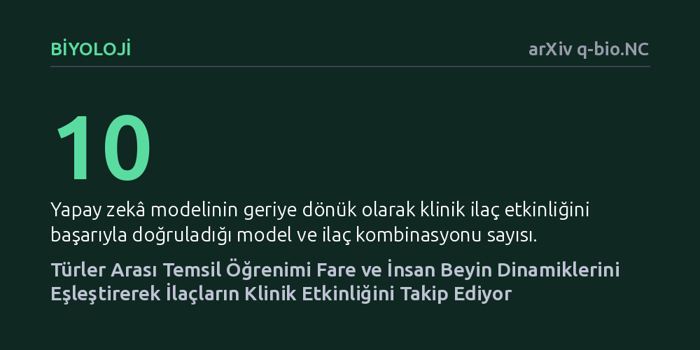

BIYOLOJI · arXiv q-bio.NC · 2026-10-10
Araştırmacılar, hayvan ve insan beyin sinyallerini türe değil biyolojik duruma göre eşleştiren yeni bir karşıtsal öğrenme yöntemi geliştirdi. Model, fare ve insan beyin dinamiklerini başarıyla hizalayarak on farklı ilaç kombinasyonunun klinik etkinliğini geriye dönük olarak doğru biçimde takip etti.
Laboratuvarda fareler üzerinde başarılı olan nörolojik ilaçların insanlarda neden sıklıkla başarısız olduğunu anlamayı ve klinik deney öncesinde doğru molekülleri seçmeyi sağlayabilir.

Nörolojik hastalıklara yönelik ilaç geliştirme süreçlerinin en büyük açmazı, hayvan modellerinde umut vadeden tedavilerin insan klinik deneylerinde büyük oranda başarısız olmasıdır. Farelerde hastalık belirtilerini gideren bir kimyasal, insan beyninin çok katmanlı ve karmaşık biyolojisinde aynı sonucu vermeyebilmektedir. Bu çeviri kopukluğu, hem ilaç geliştirme maliyetlerini artırmakta hem de hastaların etkili tedavilere kavuşmasını geciktirmektedir.
Beynin elektriksel aktivitesini kaydeden elektrofizyoloji ölçümleri, sinir sisteminin işleyişine dair zengin ve yüksek boyutlu veriler sunar. Ancak bu verilerin yüksek boyutluluğu, hangilerinin gerçekten hastalıkla ilişkili olduğunu, hangilerinin ise tür farklılıklarından, kayıt yönteminden veya deney ortamından kaynaklanan gürültüler olduğunu ayırt etmeyi bugüne kadar imkânsız hale getiriyordu.
Araştırmacılar bu sorunu aşmak amacıyla, tür ayrımına değil biyolojik duruma odaklanan 'ikili kurallı karşıtsal öğrenme' çerçevesi geliştirdi. Geleneksel modeller verileri fare veya insan kaynaklı olmasına göre sınıflandırmaya eğilimliyken, bu yeni yaklaşım aynı biyolojik durumu (sağlıklı veya hastalıklı) temsil eden durumları birbirine yaklaştırıp farklı fenotipleri birbirinden ayıracak şekilde tasarlandı.
Böylece yapay zekâ, verideki türe özgü gürültüyü geride bırakarak her iki türde de korunan ortak sinirsel dinamikleri açığa çıkardı. Deney ortamı ve kayıt modalitelerindeki farklılıklara rağmen, türler arası elektrofizyolojik sinyaller ortak bir biyolojik temsil uzayında başarıyla hizalandı.
Geliştirilen çerçeve ilk olarak türler arasındaki duyusal tepki yapılarının korunduğunu doğruladı. Ardından epilepsi hastalığı ele alındığında; üç farklı fare modelinin, heterojen yapıdaki insan hasta popülasyonlarıyla olan özgül ve ayrışmış ilişkileri net biçimde çözümlendi.
En çarpıcı sonuç ise ilaç tedavisi gören hayvanların dondurulmuş ortak temsil uzayına yansıtılmasıyla elde edildi. İlaçların hayvan beyninde yol açtığı sinirsel hareketin insanla hizalanmış 'sağlıklı' duruma doğru yönelmesi, incelenen on model-ilaç kombinasyonunda bilinen klinik etkinliği geriye dönük olarak başarıyla doğruladı; hatta modele özgü zararlı bir ilaç etkisi bile doğru saptandı. Ayrıca model, farklı genetik kökenlere rağmen Fmr1 nakavt fareler ile insan 16p11.2 varyant taşıyıcıları arasındaki ortak sinirsel dinamikleri de başarıyla belirledi.
Bu bulgular, türler arası sinirsel temsil öğreniminin insanlardaki karmaşık hastalık tablolarını laboratuvarda çalışılabilir hayvan modelleriyle eşleştirmede güçlü bir potansiyel taşıdığını göstermektedir. Araştırmacılar, gelecekte bir ilacın insan devre işlevini onarıp onarmadığını klinik fazlara geçmeden önce çok daha isabetli biçimde değerlendirebilir.
Bununla birlikte, çalışmanın henüz hakem denetiminden geçmemiş bir önbaskı olduğu ve elde edilen sonuçların geriye dönük veri setlerine dayandığı dikkate alınmalıdır. Yöntemin ilaç keşif süreçlerine tam olarak entegre edilebilmesi için ileriye dönük yeni deneylerle desteklenmesi gerekmektedir.